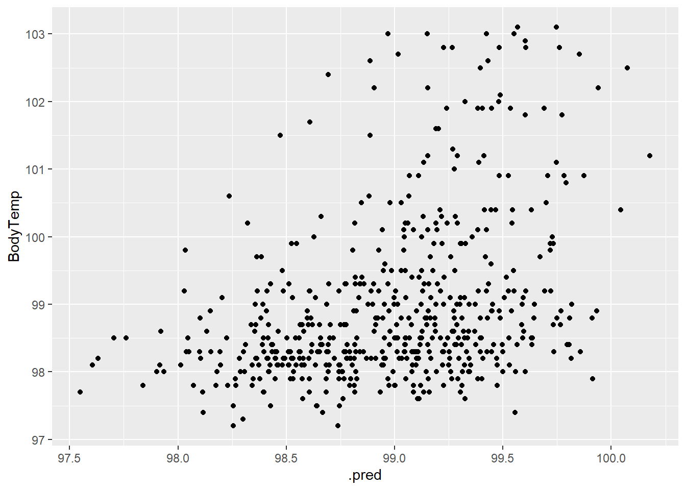

library(tidymodels)
library(tidyverse)
library(skimr)
library(here)
library(rsample)Model Evaluation
This exercise is the fourth in the flu analysis series. This page will use the tidymodels guide to split the data into testing and training sets and run regression and classification models on the two main outcomes of interest: the main categorical outcome Nausea and main continuous outcome BodyTemp.
Load packages
Load data
#load data
filelocation <- here("fluanalysis", "data", "cleandata.rds")
load(filelocation)
#reassign as flu
flu <- cleandataflu <- flu %>%
select(!c("Vision","Hearing")) #remove columns with <50 entries in one categoryData splitting
To start model evaluation, we will first split the data into training and testing sets.
#establish reproducibility by setting the seed
set.seed(123)
#add data to the training set
data_split <- initial_split(flu, prop = 3/4)
#create two data sets with 3/4 of data in training set
train_data <- training(data_split)
test_data <- testing(data_split)Create a recipe and workflow from all symptoms
We will first create a recipe for a logistic regression model predicting nausea from all predictor variables. The recipe uses the recipe() function and will contain the formula and the data (the training set).
flu_rec <-
recipe(Nausea ~ . , data = train_data) %>%
step_dummy(all_nominal(), -all_outcomes()) %>%
step_ordinalscore()Next we will set a model workflow to pair the model and recipe together. This will help when evaluating model based on the training and testing data set.
#set model
lr_mod <- logistic_reg() %>%
set_engine("glm")
flu_wflow <-
workflow() %>%
add_model(lr_mod) %>%
add_recipe(flu_rec)We can create one function that will create the recipe and train the model using the workflow() and fit() functions.
flu_fit <-
flu_wflow %>%
fit(data = train_data)To check the fitted model, the extract_fit_parsnip() function will display the fitted model.
flu_fit %>%
extract_fit_parsnip() %>%
tidy()# A tibble: 32 × 5
term estimate std.error statistic p.value
<chr> <dbl> <dbl> <dbl> <dbl>
1 (Intercept) -2.83 9.07 -0.312 0.755
2 BodyTemp -0.0101 0.0921 -0.109 0.913
3 SwollenLymphNodes_Yes -0.435 0.235 -1.85 0.0649
4 ChestCongestion_Yes 0.277 0.252 1.10 0.271
5 ChillsSweats_Yes 0.333 0.355 0.939 0.348
6 NasalCongestion_Yes 0.233 0.300 0.778 0.437
7 Sneeze_Yes 0.115 0.253 0.455 0.649
8 Fatigue_Yes 0.288 0.460 0.626 0.531
9 SubjectiveFever_Yes 0.402 0.271 1.48 0.138
10 Headache_Yes 0.644 0.367 1.75 0.0794
# … with 22 more rowsPredict from trained model
Next, we can use the test_data set to predict from the trained model by using the flu_fit.
predict(flu_fit, test_data)# A tibble: 183 × 1
.pred_class
<fct>
1 No
2 Yes
3 No
4 No
5 No
6 No
7 No
8 No
9 No
10 Yes
# … with 173 more rowsThis output is not terribly helpful. The predicted probability of having nausea can be found by using the augment() function.
flu_aug <- augment(flu_fit, test_data)To evaluate the performance of the model, we will use the ROC curve and ROC-AUC as the metrics. Ideally, the model should have at least a value of 0.7 to be useful.
levels(flu$Nausea)[1] "No" "Yes"#generate ROC curve
flu_aug %>%
roc_curve(truth = Nausea, .pred_Yes, event_level = "second") %>% #must specify "second" since the positive event is "Yes" which is the second level
autoplot()#generate ROC-AUC
flu_aug %>%
roc_auc(truth = Nausea, .pred_Yes, event_level = "second")# A tibble: 1 × 3
.metric .estimator .estimate
<chr> <chr> <dbl>
1 roc_auc binary 0.709The area under the ROC curve is 0.706 which indicates the model is somewhat useful.
We can also use the train_data to predict the from the model.
#predict from training data
flu_aug2 <- augment(flu_fit, train_data)
#generate ROC curve
flu_aug2 %>%
roc_curve(truth = Nausea, .pred_Yes, event_level = "second") %>%
autoplot()
#generate ROC-AUC
flu_aug2 %>%
roc_auc(truth = Nausea, .pred_Yes, event_level = "second")# A tibble: 1 × 3
.metric .estimator .estimate
<chr> <chr> <dbl>
1 roc_auc binary 0.798The ROC-AUC is higher with the train_data than the test_data at 0.80 which is understandable since the model was fitted to the train_data set.
Create recipe with runny nose as predictor
Using all the same steps as above, we can predict nausea from runny nose.
#create recipe
flu_recRN <-
recipe(Nausea ~ RunnyNose, data = train_data)%>%
step_dummy(all_nominal(), -all_outcomes()) %>%
step_ordinalscore()
#create work flow
flu_wflowRN <-
workflow() %>%
add_model(lr_mod) %>%
add_recipe(flu_recRN)
#create fitted model
flu_fitRN <-
flu_wflowRN %>%
fit(data = train_data)Predicting outcome from the RunnyNose fitted model.
#create predictions
flu_augRN <- augment(flu_fitRN, test_data)
#generate ROC curve
flu_augRN %>%
roc_curve(truth = Nausea, .pred_Yes, event_level = "second") %>%
autoplot()#generate ROC-AUC
flu_augRN %>%
roc_auc(truth = Nausea, .pred_Yes, event_level = "second")# A tibble: 1 × 3
.metric .estimator .estimate
<chr> <chr> <dbl>
1 roc_auc binary 0.460Using the test_data and RunnyNose as the predictor, the ROC-AUC is 0.460, indicating that the model is not helpful in predicting nausea.
Evaluate the fitted model using the train_data.
#predict from training data
flu_augRN2 <- augment(flu_fit, train_data)
#generate ROC curve
flu_augRN2 %>%
roc_curve(truth = Nausea, .pred_Yes, event_level = "second") %>%
autoplot()#generate ROC-AUC
flu_augRN2 %>%
roc_auc(truth = Nausea, .pred_Yes, event_level = "second")# A tibble: 1 × 3
.metric .estimator .estimate
<chr> <chr> <dbl>
1 roc_auc binary 0.798Using the train_data, the ROC-AUC is 0.801 which is much different from the test_data evaluation. This is possibly due to the random distribution of the data, with the train_data having a higher correlation between RunnyNose and Nausea observations. This is a good example of why fitted models should not be evaluated using only the data used to fit the model.
This section added by Leah Lariscy
Create workflow for a linear regression
This will be used to predict body temp from all other variables
lm_mod <- linear_reg() #define model
recipe_bodytemp <- recipe(BodyTemp ~ ., data = train_data)%>% #set recipe to predict body temp using all variables
step_dummy(all_nominal(), -all_outcomes()) %>%
step_ordinalscore()
bodytemp_lm_workflow <- workflow() %>% #combine model and recipe to make workflow
add_model(lm_mod) %>%
add_recipe(recipe_bodytemp)Data fitting
set.seed(626)
bodytemp_fit <- bodytemp_lm_workflow %>%
fit(data = train_data)
tidy(bodytemp_fit)# A tibble: 32 × 5
term estimate std.error statistic p.value
<chr> <dbl> <dbl> <dbl> <dbl>
1 (Intercept) 98.2 0.352 279. 0
2 SwollenLymphNodes_Yes -0.104 0.108 -0.960 0.337
3 ChestCongestion_Yes 0.0566 0.114 0.496 0.620
4 ChillsSweats_Yes 0.279 0.151 1.84 0.0664
5 NasalCongestion_Yes -0.213 0.133 -1.60 0.110
6 Sneeze_Yes -0.400 0.116 -3.44 0.000627
7 Fatigue_Yes 0.375 0.187 2.00 0.0461
8 SubjectiveFever_Yes 0.517 0.122 4.25 0.0000259
9 Headache_Yes -0.0614 0.151 -0.406 0.685
10 Weakness_Mild -0.0473 0.226 -0.209 0.834
# … with 22 more rowsModel evaluation on training data
bodytemp_aug <- augment(bodytemp_fit, train_data)
bodytemp_aug %>% select(BodyTemp, .pred)# A tibble: 547 × 2
BodyTemp .pred
<dbl> <dbl>
1 98.5 99.4
2 98.6 98.5
3 98.5 99.0
4 101. 99.5
5 98.5 97.8
6 100. 99.3
7 98.3 98.6
8 98.7 98.6
9 98.5 99.2
10 102. 99.2
# … with 537 more rowsbodytemp_aug %>%
rmse(truth = BodyTemp, .pred)# A tibble: 1 × 3
.metric .estimator .estimate
<chr> <chr> <dbl>
1 rmse standard 1.13bodytemp_aug %>% ggplot(aes(.pred, BodyTemp)) +
geom_point()
Looking at the plot, there doesn’t appear to be a strong relationship here.
Model evaluation on testing data
bodytemp_aug_2 <- augment(bodytemp_fit, test_data)
bodytemp_aug_2 %>% select(BodyTemp, .pred)# A tibble: 183 × 2
BodyTemp .pred
<dbl> <dbl>
1 98.3 99.5
2 101. 98.9
3 98.8 99.0
4 98.5 98.7
5 98.1 98.5
6 98.4 99.0
7 99.5 99.5
8 98.8 99.7
9 102. 98.9
10 99.7 99.6
# … with 173 more rowsbodytemp_aug_2 %>%
rmse(truth = BodyTemp, .pred)# A tibble: 1 × 3
.metric .estimator .estimate
<chr> <chr> <dbl>
1 rmse standard 1.14bodytemp_aug_2 %>% ggplot(aes(.pred, BodyTemp)) +
geom_point()
Not seeing a strong relationship in the testing data either
Create workflow for linear regression pt. 2
This will be used to predict body temp from runny nose data
lm_mod <- linear_reg() #define model
recipe_bodytemp2 <- recipe(BodyTemp ~ RunnyNose, data = train_data) %>% #set recipe to predict body temp using runny nose %>%
step_dummy(all_nominal(), -all_outcomes()) %>%
step_ordinalscore()
bodytemp_lm_workflow2 <- workflow() %>% #combine model and recipe to make workflow
add_model(lm_mod) %>%
add_recipe(recipe_bodytemp2)Data fitting
set.seed(626)
bodytemp_fit <- bodytemp_lm_workflow %>%
fit(data = train_data)
tidy(bodytemp_fit)# A tibble: 32 × 5
term estimate std.error statistic p.value
<chr> <dbl> <dbl> <dbl> <dbl>
1 (Intercept) 98.2 0.352 279. 0
2 SwollenLymphNodes_Yes -0.104 0.108 -0.960 0.337
3 ChestCongestion_Yes 0.0566 0.114 0.496 0.620
4 ChillsSweats_Yes 0.279 0.151 1.84 0.0664
5 NasalCongestion_Yes -0.213 0.133 -1.60 0.110
6 Sneeze_Yes -0.400 0.116 -3.44 0.000627
7 Fatigue_Yes 0.375 0.187 2.00 0.0461
8 SubjectiveFever_Yes 0.517 0.122 4.25 0.0000259
9 Headache_Yes -0.0614 0.151 -0.406 0.685
10 Weakness_Mild -0.0473 0.226 -0.209 0.834
# … with 22 more rowsModel evaluation on training data
bodytemp_aug3 <- augment(bodytemp_fit, train_data)
bodytemp_aug3 %>% select(BodyTemp, .pred)# A tibble: 547 × 2
BodyTemp .pred
<dbl> <dbl>
1 98.5 99.4
2 98.6 98.5
3 98.5 99.0
4 101. 99.5
5 98.5 97.8
6 100. 99.3
7 98.3 98.6
8 98.7 98.6
9 98.5 99.2
10 102. 99.2
# … with 537 more rowsbodytemp_aug3 %>%
rmse(truth = BodyTemp, .pred)# A tibble: 1 × 3
.metric .estimator .estimate
<chr> <chr> <dbl>
1 rmse standard 1.13bodytemp_aug3 %>% ggplot(aes(.pred, BodyTemp)) +
geom_point()
There is a slight positive correlation but not really.
Model evaluation on testing data
bodytemp_aug_4 <- augment(bodytemp_fit, test_data)
bodytemp_aug_4 %>% select(BodyTemp, .pred)# A tibble: 183 × 2
BodyTemp .pred
<dbl> <dbl>
1 98.3 99.5
2 101. 98.9
3 98.8 99.0
4 98.5 98.7
5 98.1 98.5
6 98.4 99.0
7 99.5 99.5
8 98.8 99.7
9 102. 98.9
10 99.7 99.6
# … with 173 more rowsbodytemp_aug_4 %>%
rmse(truth = BodyTemp, .pred)# A tibble: 1 × 3
.metric .estimator .estimate
<chr> <chr> <dbl>
1 rmse standard 1.14bodytemp_aug_4 %>% ggplot(aes(.pred, BodyTemp)) +
geom_point()No correlation
Overall, I don’t think the flu symptom is very predictive of body temperature.